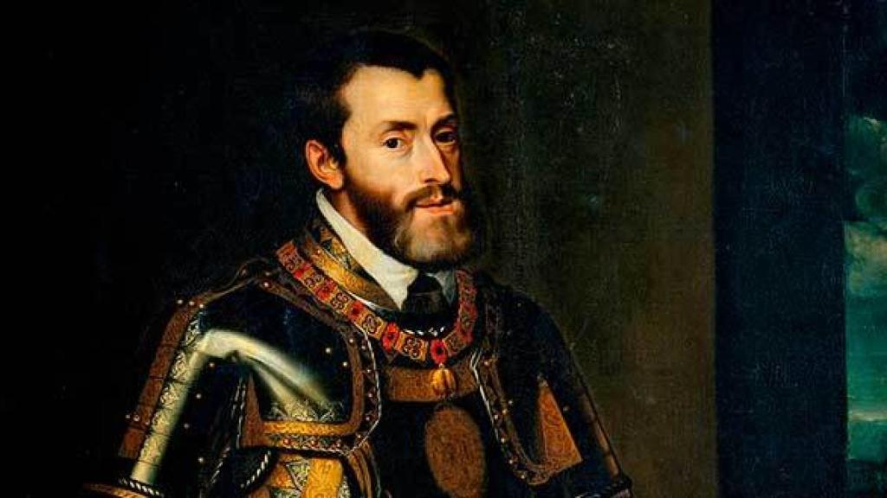

Když se řekne Karel V., většina Čechů si jen obtížně vybaví, o koho šlo. Přitom šlo o jednoho z nejmocnějších panovníků evropských dějin – španělského krále a zároveň císaře Svaté říše římské.
Vnuk slavných Katolických králů Ferdinanda Aragonského a Isabely Kastilské nastoupil v roce 1516 na trůn jako král Kastilie a Aragonie, tedy zemí, které tvořily základ dnešního Španělska. Spolu s nimi zdědil také rozsáhlé državy v Itálii, Nizozemí a zámořská území v Americe.
Teprve o tři roky později, v roce 1519, byl zvolen císařem Svaté říše římské.
A právě tehdy se pod vládou jednoho panovníka ocitla obrovská část Evropy včetně Českého království.
Z dnešního pohledu je zvláštní uvědomit si, že české země tehdy spravoval stejný panovník, který vládl i Španělsku a jeho zámořské říši.
Samozřejmě nešlo o součást Španělska v dnešním smyslu. České království si zachovávalo vlastní zemské instituce, zákony i tradice.
Non plus ultra
Po staletí byly Herkulovy sloupy – dnešní gibraltarská skála a hora Džabal Musa na marockém pobřeží – symbolem hranice známého světa. Právě s nimi bylo spojováno slavné heslo NON PLUS ULTRA – „Dále už nic není".
Jenže pak přišly zámořské objevy. Španělsko začalo budovat říši sahající přes oceán až do Ameriky. Staré přesvědčení přestalo platit.
Proto bylo slůvko NON odstraněno. Zůstalo jen PLUS ULTRA – „Dále za hranice".
Toto heslo si Karel V. zvolil za svůj osobní symbol. Dodnes je součástí španělského státního znaku.
A když dnes ve španělském státním znaku vidíme heslo PLUS ULTRA, díváme se na symbol panovníka, který byl nejen španělským králem a císařem Svaté říše římské, ale také vládcem Českého království.
